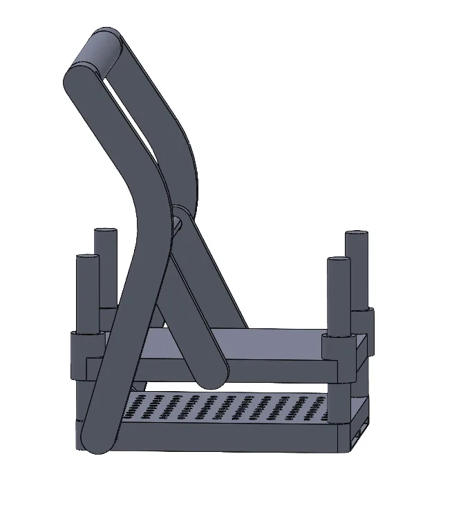
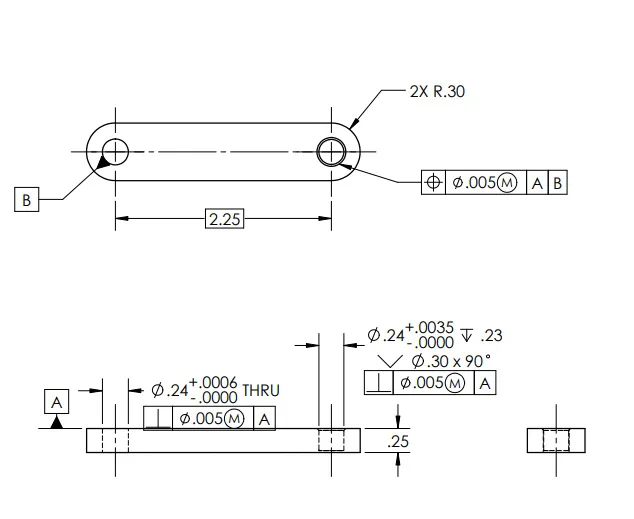
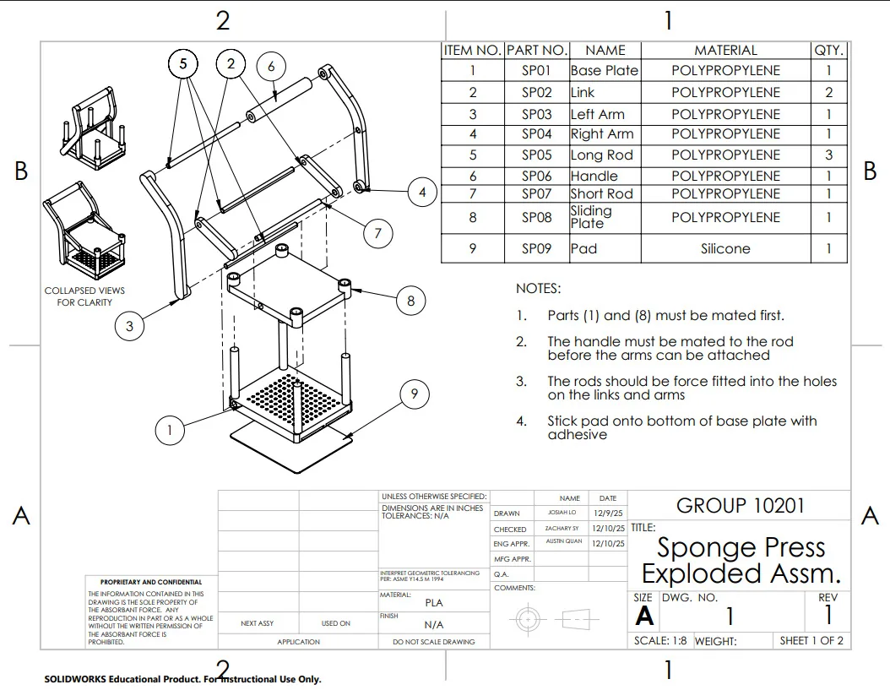
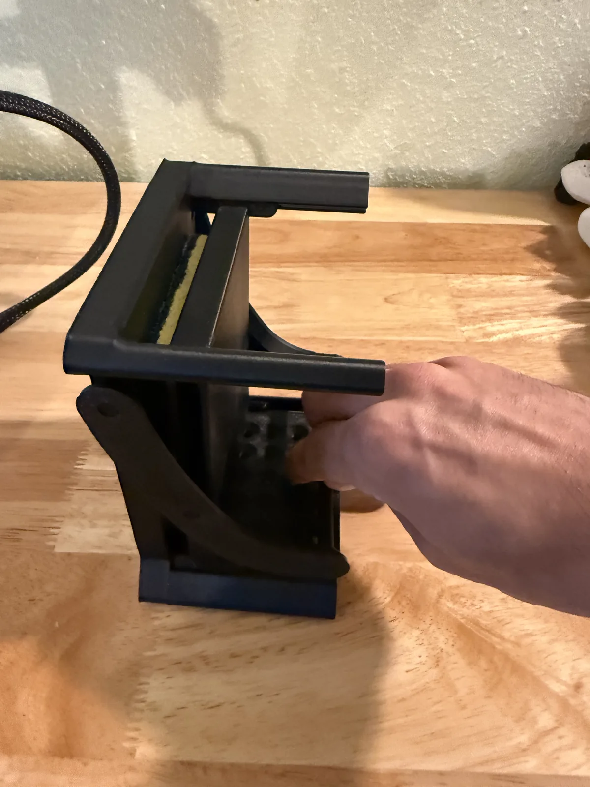
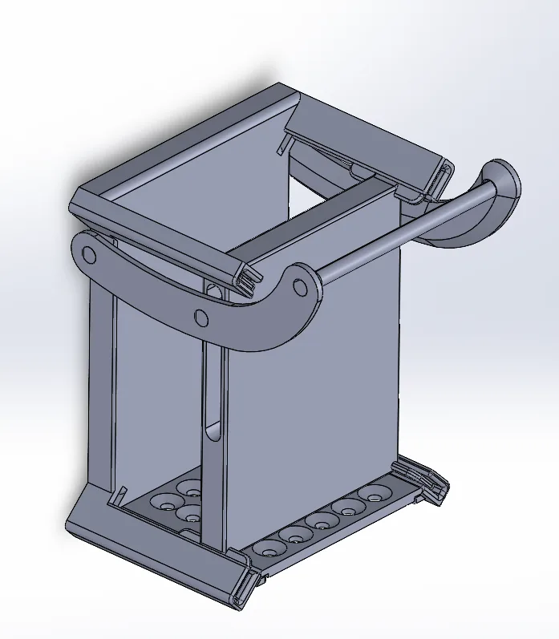

01Mechanism
I designed a four-bar slider-crank linkage that converts the lever’s rotation into the vertical motion of a sliding press plate, and modeled the full 9-part assembly in SolidWorks.


02Fits & tolerances
I sized interference fits for the rod-to-hole press fits and clearance fits for the sliding components.


03Drawing package
I drafted the exploded assembly drawing, the outline assembly drawing, and the bill of materials, and worked with my team on the detail drawings to make sure the geometric dimensioning and tolerancing was correct.


04Prototyping
The press was fabricated with 3D printing. We went through multiple prototype cycles to refine the geometry and verify the fit tolerances.




05Results
- Delivered a functional prototype with a reliable compression mechanism.
- Produced an ASME Y14.5-compliant drawing package.
- Iterated through multiple prototype cycles to refine geometry and verify fit tolerances.